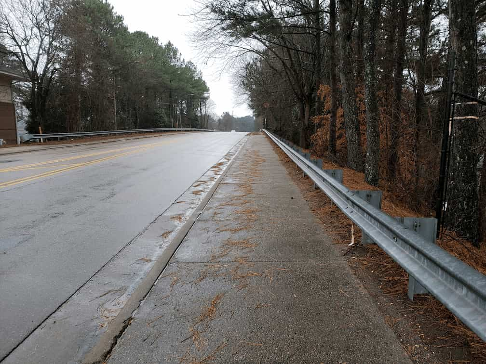
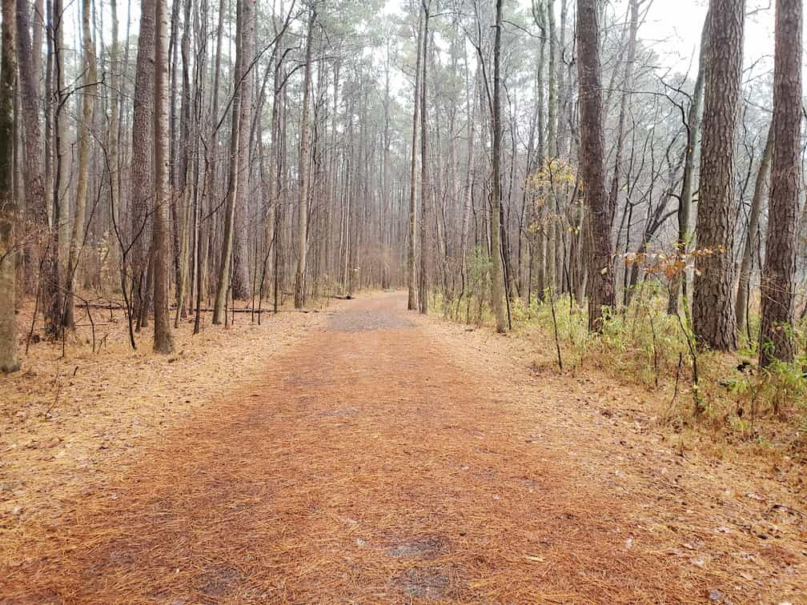
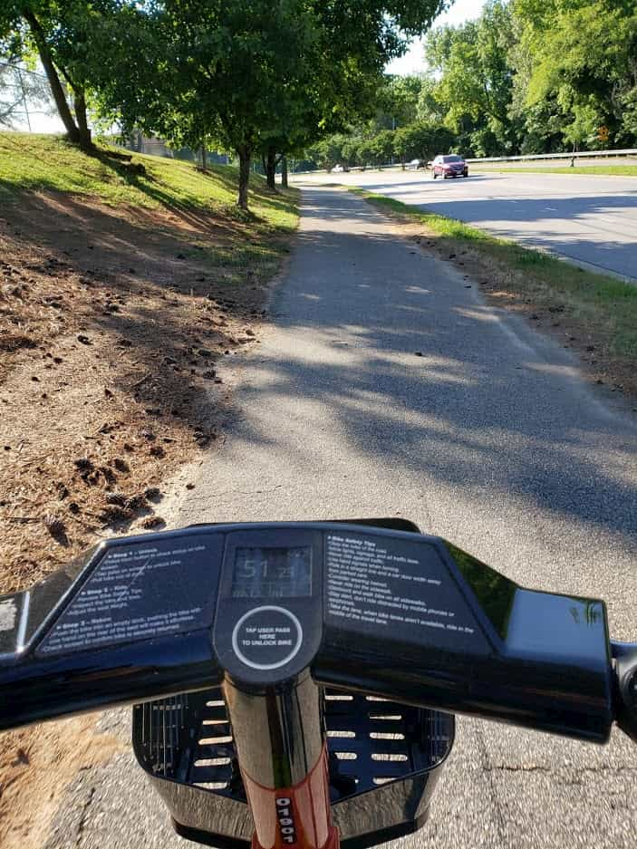
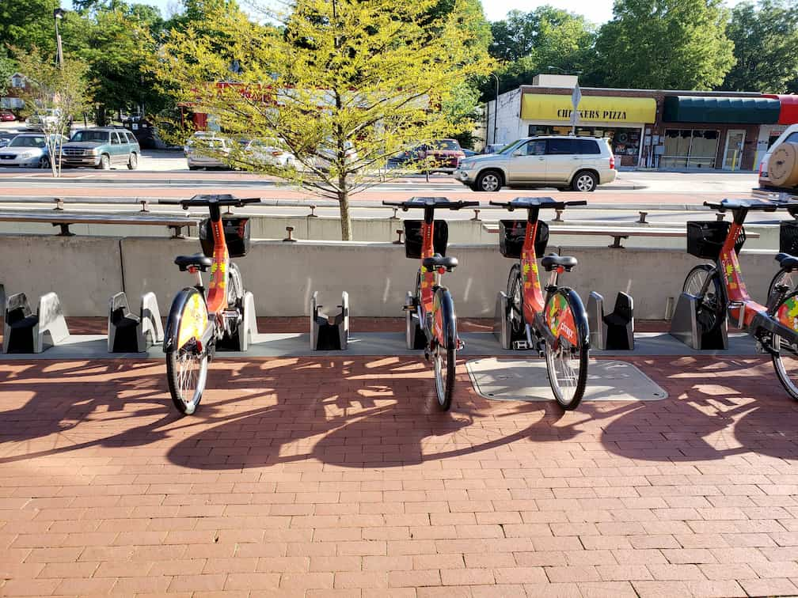

We have set marginal greenways to be any greenway that is unpaved or less than 7 feet wide.


close
Greenway Detours
Community recommended ways to avoid greenway closures. These may take you on sidewalks, bike lanes,
or calm neighborhoods.
Find out more about greenway closures in Raleigh from the city.
close
Bike Lanes / Side Paths
Bike lanes on the road, as well as side paths next to the road

close
Recommended Paths
Roads without dedicated bike infrastructure, but found to be fairly comfortable to bike on.
Generally they have a speed limit of 25 mph or less with low traffic volumes.
close
Citrix Cycle
Raleigh's docked bike share programming, including some electric assist bikes! Find out more at
citrixcycle.com
